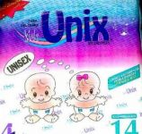
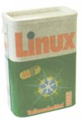

Este mes el equipo de LinuxFocus estará en Burdeos (Francia) en el Libre Software Meeting (LSM) . El LSM dura entre el 4 y el 8 de July. Tal vez nos veamos las caras allí. La sesión sobre LinuxFocus está planeada para el Jueves por la mañana, comenzando a las 9:00. Desafortunadamente este año se hace en paralelo al "Linux Tag" en Alemania. El año próximo los dos eventos pretenden coordinarse, para que resulte posible asistir a ambos.

Dennis Ritchie mantiene una lista de productos
Unix. Entre ellos, encontramos muy curiosos algunos como los pañales
unix

Desde hace algunos meses también se puede comprar un detergente para
lavadoras llamado Linux. ¡Linux es para todos, no sólo para los usuarios
de ordenadores!
Linux for everybody not only computer users!
Informadnos sobre otros productos no relacionados con Linux, pero que
se llamen así. Tal vez podríamos empezar una colección.
 Avoiding security holes when developing an
application - Part 4: format strings
, por Frédéric Raynal, Christophe Blaess, Christophe Grenier
Revisión de libros: Programación profesional en PERL
, por Guido Socher
Cantando bajo la web
, por Georges Tarbouriech
Hacer magia con las imágenes en la shell
Compilar, configurar e instalar un Kernel de
Linux Personalizado comletamente operativo
Usos (y abusos) de Raid, /dev/ram, y ramfs
, por Mark Nielsen
Aprendiendo con el nmap
, por Danilo Lujambo
Páginas Amarillas, parte I
, por Frédéric Raynal
Páginas Amarillas, parte II
, por Frédéric Raynal
Avoiding security holes when developing an
application - Part 4: format strings
, por Frédéric Raynal, Christophe Blaess, Christophe Grenier
Revisión de libros: Programación profesional en PERL
, por Guido Socher
Cantando bajo la web
, por Georges Tarbouriech
Hacer magia con las imágenes en la shell
Compilar, configurar e instalar un Kernel de
Linux Personalizado comletamente operativo
Usos (y abusos) de Raid, /dev/ram, y ramfs
, por Mark Nielsen
Aprendiendo con el nmap
, por Danilo Lujambo
Páginas Amarillas, parte I
, por Frédéric Raynal
Páginas Amarillas, parte II
, por Frédéric Raynal ¿Como dibujar una línea realmente recta con The Gimp?
The Gimp es ciertamente uno de los programas más potentes para tratamiento de
imágenes que puedes encontrar. Está principalmente diseñado para trabajar
con gráficos de píxel, y no es un programa de CAD o dibujo vectorial.
Sobre todo se "pinta" con The Gimp. A pesar de ello, en agunas ocasiones
se necesita una línea realmente recta. The Gimp también puede hacerlo.
Todas sus herramientas de dibujo como el lápix, etc soportan líneas
rectas.
Haz click en el punto inicial de la línea, presiona la tecla "shift" y
presiona en el punto final. Ahora ya dispones de una línea recta de verdad.
|
© 1999 LinuxFocus Página de contacto con LinuxFocus |